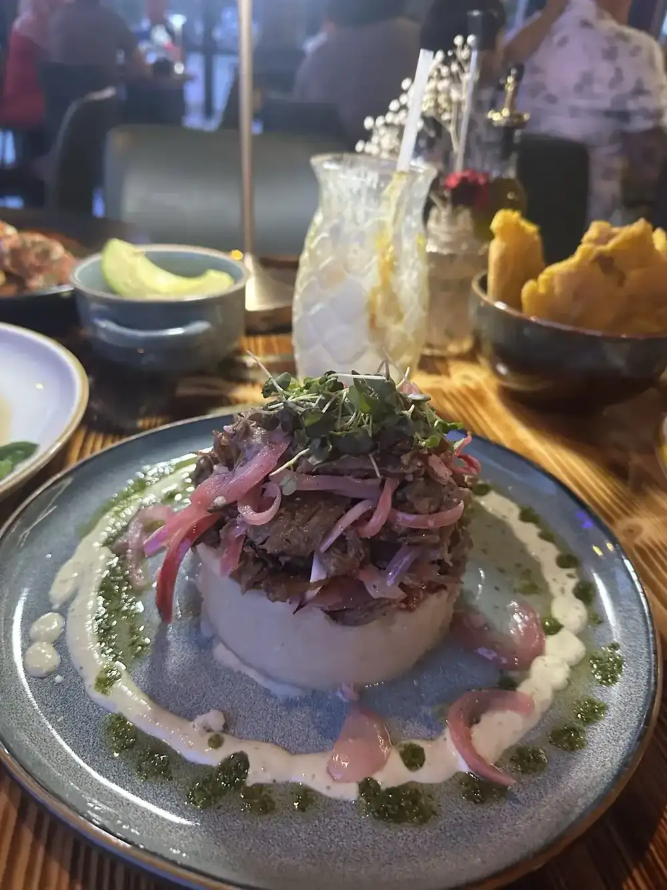

Tapas
Serrano ham croquettes, fried chickpeas with chorizo, garlic shrimp and Galician-style octopus. Guests start with the bruschetta.
Olivos · Carrollwood
Olivos Restaurant serves Carrollwood from Tampa.
Coming from Carrollwood? Olivos Restaurant is in Tampa, at 7503 W Waters Ave. Tapas, seafood, grilled steaks and paella, open from 11 AM daily.
What guests order
Tapas, the sea and the grill, in the words of the people who ate them.
Serrano ham croquettes, fried chickpeas with chorizo, garlic shrimp and Galician-style octopus. Guests start with the bruschetta.

Grilled lobster with garlic butter, seafood paella with saffron and shrimp enchilado in criolla sauce.

Skirt steak and ribeye reviewers call tender and well seasoned, plus picanha and slow-roasted pork.
4.8 / 5 · 2295 Google reviews
1We stopped by randomly and based off the reviews we expected everything to taste good but even then, it exceeded our expectations! The food was so amazing, excited to come back and try more. We had the Churrasco and the 1lbs Ribeye, both were tender and well seasoned. The drinks were also great, Our server Daylan gave us the best recommendations.
2Everything about our experience was amazing! We had the bruschetta to start which was amazing. I had the skirt steak with rice pilaf, and it was cooked perfectly, tender, flavorful, and absolutely delicious. My husband ordered the seafood paella, which was loaded with fresh seafood and had incredible flavor. We also had the Bonbón, which was amazing, and finished the meal with the crème brûlée.
3We stopped in to see if they take reservations and Barbara ended up seating us and was our waitress. She was very attentive and made us feel welcomed. It's such a cute place with nice paintings. There is limited seating. The service was great. Several people went by and asked if we needed anything. I ordered the grilled lobster. So delicious. My friend ordered a fish cordon bleu which he enjoyed.
4Lovely atmosphere! The food was timely and delicious! Pipping hit n freshly made! Our server Barbara was super attentive without being intrusive which I appreciate. Def will come back even do is a very long drive from home.
5I normally enjoy trying out new restaurants, and this experience was great. The interior design of the restaurant is nice and the service was very responsive. Although our food took a while to arrive, it was worth the wait. The highlight of our meal was definitely the flan. I recommend checking this place out!
Open every day from 11 AM. Call and ask for the paella ahead of time.